CS184/284A Spring 2025 Homework 3 Write-Up
Names: Siva Tanikonda
Link to webpage:
cal-cs184-student.github.io/hw-webpages-siva-wp/hw3/index.html
Link to GitHub repository:
github.com/cal-cs184-student/sp25-hw3-siva-lighting
Overview
In this homework, I created a system for simulating/depicting realistic lighting in scenes using Monte-Carlo methods, geometry, and extensions of the sampling methods we learned in earlier homework assignments. Firstly, I worked with transformations to transform the positions of pixels on my screen to points within a 3D scene using camera transforms. Then, I created algorithms to calculate intersections for rays and triangles, and rays and spheres. Using these algorithms, I managed to create a basic way of sampling 3D scenes and visualizing them using normal shading. But, realistic lighting is the primary goal of this project. I created systems to depict both light being generated by a surface itself, light bouncing off of one surface and going into our camera, and finally: a way to simulate the bouncing of light from light sources off of an arbitrary number of surfaces to eventually reach the position of the camera. Along with these fundamental features, I also implemented various optimizations for 3D scene rendering, such as a bounding-volume hierarchy (which allows us to efficiently calculate intersections with a ray and multiple primitives in a scene), importance sampling (where you can sample rays directly from lights instead of random angles from our camera rays' bounce positions), and finally, adaptive sampling (which uses the concept of confidence intervals to reduce the number of samples per screen pixel based on the variance of rays being sent through that pixel). Through this homework, I have developed a deeper appreciation for the complexity (and practicality!) of developing lighting systems. This homework also provided me with the foundation and appreciation to look more into how lighting is implemented more efficiently, as modern technology such as dedicated GPUs allow us to speed-up the rendering process far more than with pure CPU-run rendering.
Part 1: Ray Generation and Scene Intersection
- We know that to generate our rendering, we need to take samples of each pixel in our current camera view. To do this, for each pixel \((x,y)\), we take the average of
ns_aa independent radiance samples, where the \(i\)-th sample is at the position: \((x+X_i,y+Y_i)\), where \(X_i,Y_i\sim\text{Uniform}(0,1)\) (the Monte-Carlo estimate under a uniform distribution is just the average of the samples). Once we get the average, we assign the pixel on the screen to the average radiance. For each sample position, we utilize the generate_ray function to transform our sample position from our image space to our world space. This function does the following:
- Find the direction from the camera position to the sample position using the formula:\[\vec{d}=\left(-\tan\left(\frac{\text{hFOV}}{2}\right)+2x\times\tan\left(\frac{\text{hFOV}}{2}\right),-\tan\left(\frac{\text{vFOV}}{2}\right)+2y\times\tan\left(\frac{\text{vFOV}}{2}\right),-1\right)\]
- Rotate the direction by the camera-to-world rotation matrix as follows:\[\vec{d}:=M_{\text{C2W}}\vec{d}\] This will tell us the direction of the sample point from the camera position in world space.
- Finally, normalize our direction vector: \(\vec{d}:=\frac{\vec{d}}{\|\vec{d}\|_2}\)
- Create a ray with the origin at the camera position (
pos) and the direction as \(\vec{d}\). Additionally, specify the minimum and maximum intersection times of any ray coming out of the camera as the near-clipping plane and far-clipping plane, respectively.
Now, for each generated ray, est_radiance_global_illumination goes through each primitive in our scene and checks if our ray intersects it at a valid position. There are two primitives we dealt with in this part:
- Triangles: we declare an intersection if our ray intersects our triangle at a time \(t\in[\min_t,\max_t]\) (where \(\min_t\) and \(\max_t\) are values in our ray object). If we find an intersection, update the \(\max_t\) to the time of the intersection (we only care about the first intersection). The algorithm is described in the next question.
- Spheres: we declare an intersection if our ray intersects our sphere at a time \(t\in[\min_t,\max_t]\). If we find an intersection, update the \(\max_t\) to the time of the intersection. To find if an intersection happened, we apply the quadratic formula to solve the following:\[\left\|\vec{r_o}+t\cdot\vec{r_d}-\vec{s_o}\right\|_2^2=t^2\left\|\vec{r_d}\right\|_2^2+2t\vec{r_d}^\top\left(\vec{r_o}-\vec{s_o}\right)+\left\|\vec{r_o}-\vec{s_o}\right\|_2^2=s_r^2\]where \(r\) is our ray and \(s\) is our sphere. We pick the smallest valid intersection time \(t^\star\) if one exists, and declare that there was no intersection if no such \(t^\star\) exists. Our normal vector will be the normalization of the following vector: \[\vec{r_o}+t^\star\vec{r_d}-\vec{s_o}\]
In the case of an intersection, we record the normal at the point of the first intersection. est_radiance_global_illumination will use this normal to calculate our normal shading radiance, which we define as the radiance of our sample.
- For triangle intersection, we first pick the triangle normal \(\vec{n_i}\) to be the \(i\)-th normal to the plane of the triangle and \(\vec{p_i}\) as the \(i\)-th vertex of the triangle. First, we check if our ray is parallel to the triangle, in which case we don't have an intersection. Our ray is parallel iff \(\vec{n_1}^\top\vec{r_d}=0\) (i.e. the ray direction is orthogonal to the normal of the triangle plane). For a non-parallel ray, we are going to find the barycentric coordinates of the intersection point of our ray with the triangle's plane. We can do this by solving the following matrix formula:\[\begin{bmatrix}-\vec{r_d}&\vec{p_2}-\vec{p_1}&\vec{p_3}-\vec{p_1}\end{bmatrix}\begin{bmatrix}t\\b_2\\b_3\end{bmatrix}=\vec{r_o}-\vec{p_1}\]where \(b_1=1-b_2-b_3\) and \(b_1\vec{p_1}+b_2\vec{p_2}+b_3\vec{p_3}=\vec{r_o}+t\vec{r_d}\). We know that the triangle intersection occurs if \(b_1\), \(b_2\), and \(b_3\) are all in the range \([0,1]\) (because then our intersection point is in our triangle). We also check to make sure that our intersection time is within the range \([\min_t,\max_t]\) for our ray, and update \(\max_t\) if the intersection occurs. For our interpolated normal vector (for normal shading), we define the normal vector at our intersection as \(b_1\vec{n_1}+b_2\vec{n_2}+b_3\vec{n_3}\).
- Here are some images that have been shaded with normal shading using my program:
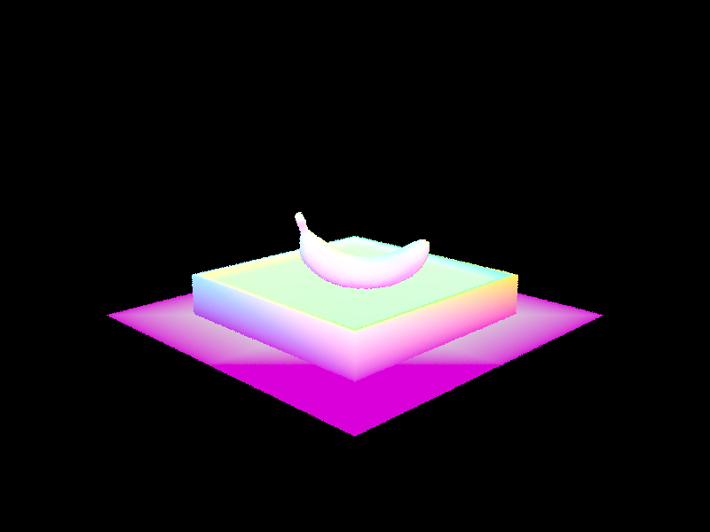
keenan/banana.dae
|
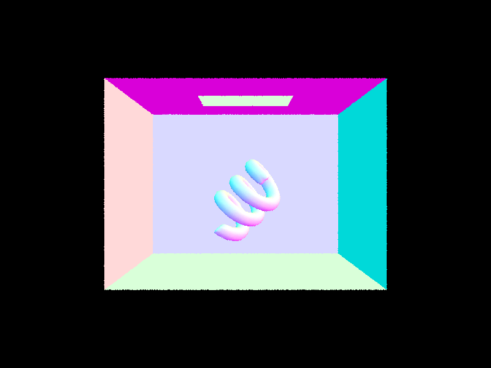
sky/CBcoil.dae
|
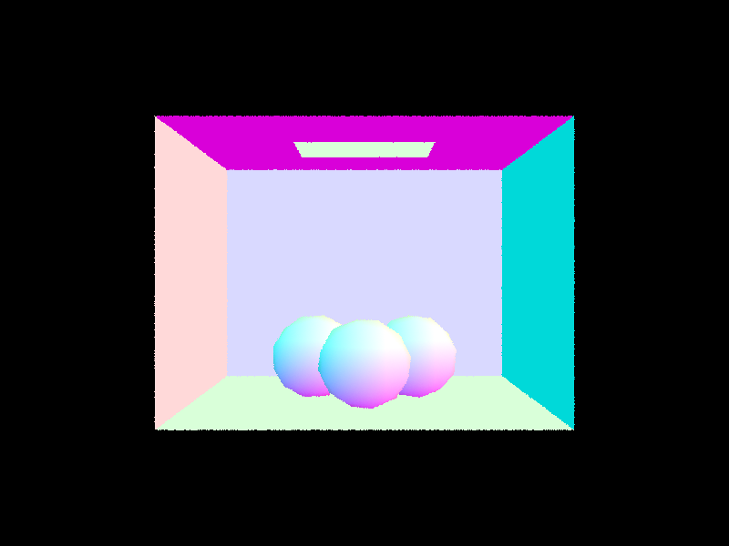
sky/CBgems.dae
|
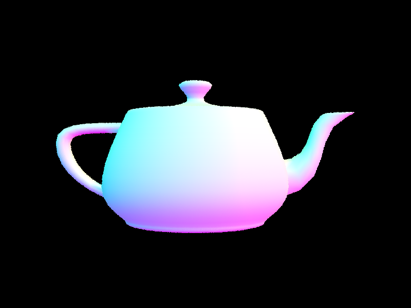
meshedit/teapot.dae
|
Part 2: Bounding Volume Hierarchy
-
At each node, I first created a list of centroids \(C\) of all the primitives from
start to end for my node. I also calculate the bounding box that contains all of the primitives. Firstly, if end-start+1 is at most the max leaf size, then I turn this node into a leaf node and just return the created node. If not, then for the dimension \(d\) with the largest extent in our bounding box, I do the following:
- I sort \(C\) by the dimension.
- I found the median (\(m\)) of the sorted list, and then found how many elements are \(\lt m\) and how many elements are \(\geq m\)
- The larger of these counts is defined as the "split size" of my split along this dimension.
I sort my list of primitives from start to end in non-decreasing order w.r.t to the dimension \(d\). I then recursively generate my left and right children of my node (the left side contains all primitives whose \(d\)-th dimension is \(\lt m\), and the right side contains all primitives whose \(d\)-th dimension is \(\geq m\)). Then, I update the start and end iterators on my current node to correspond to the new starting and ending pointers of my sorted sublist of primitives. This entire process provides me with a BVH that has a small depth and contains only a few primitives at each leaf node. I also had to deal with the edge case where there is no way to split the primitives from start to end due to all the centroids being the same, in which case I just turn my node into a leaf node (regardless of if I have reached the max leaf size yet).
- Here are some complex images generated with my BVH:
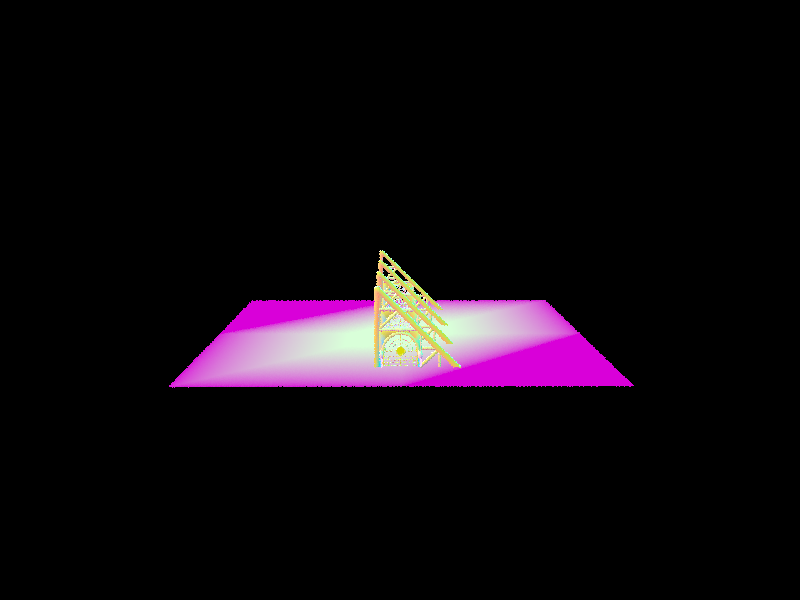
keenan/building.dae
|
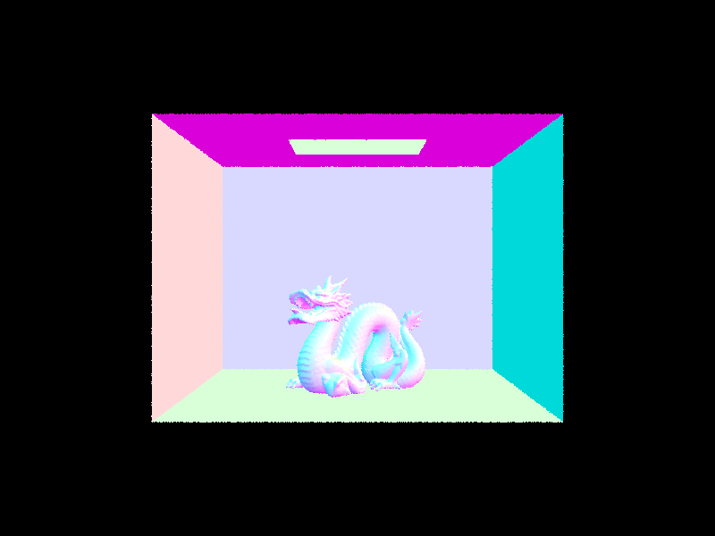
sky/CBdragon.dae
|
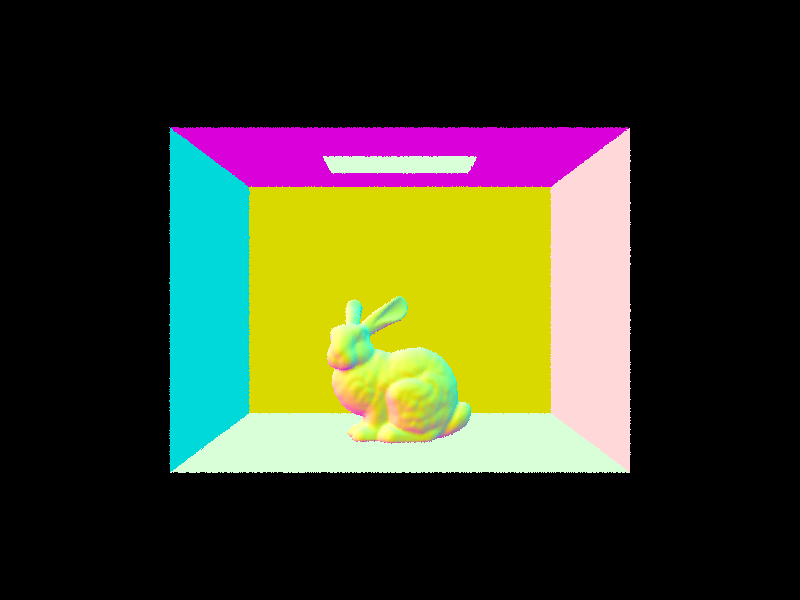
sky/CBbunny.dae
|
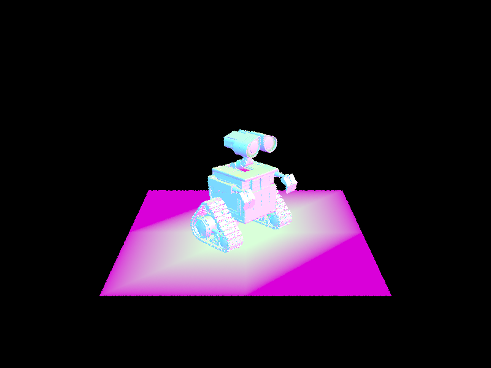
sky/wall-e.dae
|
- Below is a table of rendering times of moderately complex geometries with and without using my BVH.
| DAE_FILE |
No BVH (seconds) |
With BVH (seconds) |
sky/CBcoil.dae |
~75.391 |
~0.033 |
meshedit/teapot.dae |
~23.401 |
~0.079 |
keenan/banana.dae |
~23.492 |
~0.028 |
meshedit/cow.dae |
~55.787 |
~0.126 |
I rendered using the command ./pathtracer -r 800 600 -t 8 -f OUTPUT_FILE ../dae/DAE_FILE on a machine with the following (relevant) specs:
- CPU: Ryzen 7 7800x3D (8-core, 16-thread)
- RAM: 32 GB 6400 MHz GDDR5
I observed a massive improvement in the runtime of every single one of these geometries. It appears that the more complex the mesh structure of the model, the worse the non-BVH algorithm performs in rendering (as there are more triangles to test, and every ray will, in the worst-case, test every triangle). As for the BVH solution, it performs the worse (relative to its own performance on other geometries) if the mesh takes-up a lot of the camera view (as we will have to perform many inevitable triangle intersections to both see if we intersect a triangle with our ray, and find the earliest intersection points). But, since the BVH allows us to test collisions with bounding boxes before checking ray intersections with each primitive, we end-up getting a rather great speed-up (as we can often just avoid testing the vast majority of triangles for intersections). From a more theoretical perspective, if I want to intersect \(m\) rays with \(n\) triangles in my mesh, without a BVH, I will end-up taking \(\mathcal{O}(mn)\) time. This is because I will have to perform the triangle intersection test on every triangle in my scene for each ray. But, with my BVH (whose construction ensures an average height of around \(\mathcal{O}(\log n)\)), I will end-up only performing around \(\mathcal{O}(m\log n)\) intersection tests (assuming that my max leaf size is a rather small constant)! Additionally, a lot of these tests will end-up being cube intersection tests (where I use the slab technique specified in lecture), which are much more efficient/fast than the triangle intersection tests. Another nice property of my construction is that it picks the largest extent of the bounding-box to be the axis by which we split by the median at each node (this makes the intersection between our left and right-children bounding boxes of a node mostly small). Additionally, a potential reason that my non-BVH solution is not very fast is that I did not take many steps to optimize the triangle intersection algorithm (I utilized the built-in CGL matrix inversion function to implement Möller-Trumbore intersection).
Part 3: Direct Illumination
-
For the direct hemisphere lighting, I have the following method of sampling:
- We take a number of samples equal to the number of lights times the number of samples per light (specified by the
-l flag).
- For each sample, we pick a random vector \(\vec{\omega_i}\) in a hemisphere around the intersection point of our ray with our primitive (we will call this point \(\vec{p}\)). We do this by picking a random point on the unit hemisphere, and then transforming it to the space of our scene as follows: \(\vec{\omega_i}:=M_\text{O2W}\vec{\omega_i}\). Then, we use the function
intersect with the a ray \(R_i\) centered at \(\vec{p}\) and in the direction of \(\vec{\omega_i}\), where the minimum \(t\)-value of \(R_i\) is at our \(\epsilon\) (to avoid intersection with the primitive that point \(\vec{p}\) is on). Let's say that the intersect call tells us that the radiance coming to \(\vec{p}\) from the surface that \(R_i\) intersects first is \(L_i\). We also define \(f\left(\vec{\omega_i}\rightarrow\vec{\omega_o}\right)\) as the reflectance of any light coming-in from \(-\vec{\omega_i}\) and going in \(\vec{\omega_o}\) after bouncing-off point \(\vec{p}\). Now, we get the following for the sample of our radiance:\[S_i=f(\vec{\omega_i}\rightarrow\vec{\omega_o}) L_i\cos\theta_i\]where \(\theta_i=\vec{\omega_i}^\top\vec{n}\) (this is because our vectors are unit vectors and \(\vec{n}\) is the normal to our intersection point on our primitive).
- Finally, we sum-up our \(S_i\) values and divide by the number of samples to get our final estimated radiance coming into the camera from point \(\vec{p}\).
For the direct importance lighting, we have the following method of sampling:
- We will sample separately for each light \(l\), and we will take the same number of samples for each light (specified by the
-l flag). If the light emitter is a point mass, then we just take \(1\) sample.
- For each sample for each light, we will use the
sample_L method on the light to get a random vector \(\vec{\omega_i}\) that points from \(\vec{p}\) to our light. This function call also gives us the PDF \(p(\vec{\omega_i})\) of the sampling distribution, and the distance \(d_i\) from the sampled point on the light to our point \(p\).
- We then generate a ray \(R_i\) that is centered at \(p\) and goes in the direction of \(\vec{\omega_i}\) (just like in hemisphere sampling). This ray will have a minimum time of \(\epsilon\) to intersect (for the same reason as hemisphere lighting), but we will set the maximum time to \(d_i-\epsilon\) (as this ray is only to test if the path from \(\vec{p}\) to the light is obstructed by some other primitive or not). Another difference from hemisphere sampling is that we will use the function
has_intersection in our BVH to check if there is any primitive on the path between \(\vec{p}\) and the light (because we don't care about the properties of the primitive that was intersected or what specific time \(t\) that our ray intersects the obstruction). Assuming that the radiance emitted by the light is \(L_i\) (and we don't have an obstruction), we have the following sampled radiance:\[S_i=\frac{f\left(\vec{\omega_i}\rightarrow\vec{\omega_o}\right) L_i\cos\theta_i}{p\left(\vec{\omega_i}\right)}\]where \(\theta_i=\vec{\omega_i}^\top\vec{n}\). In the case of an obstruction, we will just return our radiance sample as \(\vec{0}\).
- Then for each light, we average all the samples for that specific light.
- We add-up the averages for each individual light to get our final radiance going into the camera from point \(\vec{p}\).
-
Here are some images rendered with both lighting techniques (command:
./pathtracer -t 8 -s 64 -l 32 -m 6 [-H OR NOTHING] -f OUTPUT_FILE -r 480 480 ../dae/DAE_FILE):
| Hemisphere Sampling |
Importance Sampling |
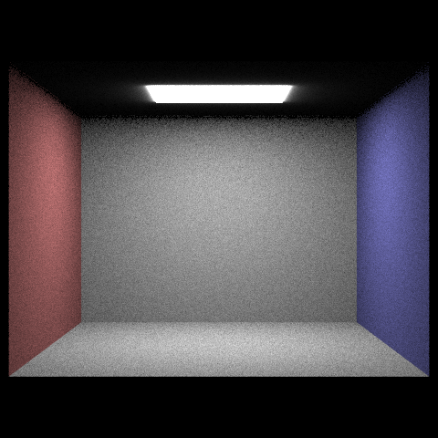
sky/CBempty.dae
|
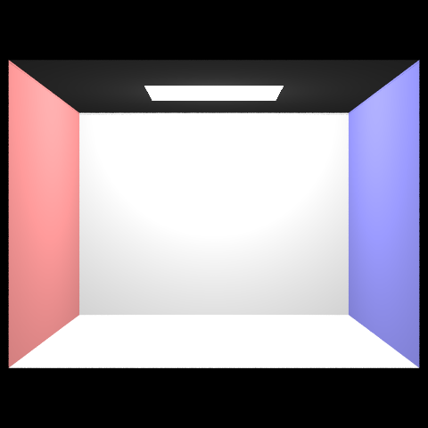
sky/CBempty.dae
|
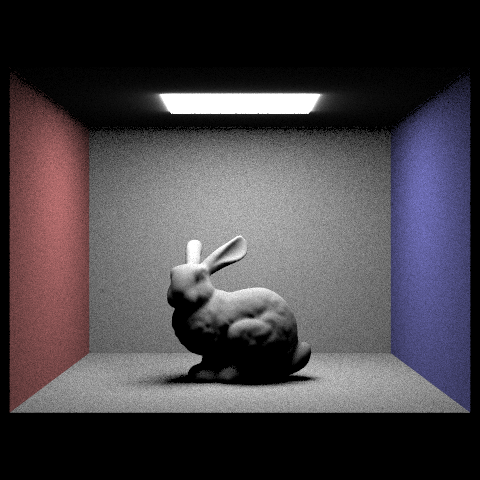
sky/CBbunny.dae
|
sky/CBbunny.dae
|
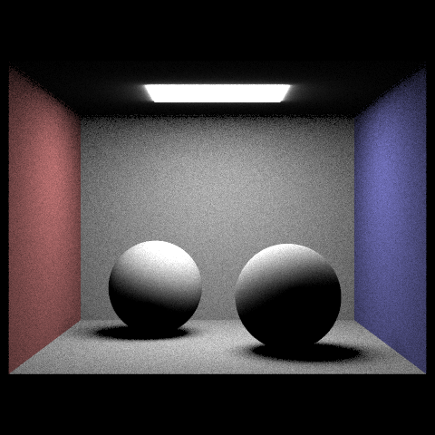
sky/CBspheres_lambertian.dae
|
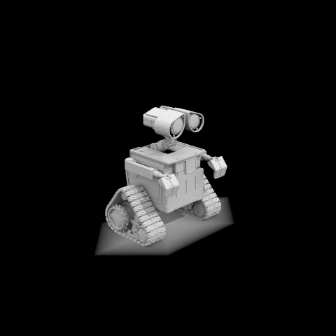
sky/CBspheres_lambertian.dae
|
-
Here are some renderings of
sky/CBspheres_lambertian.dae using importance sampling and with one sample per pixel:
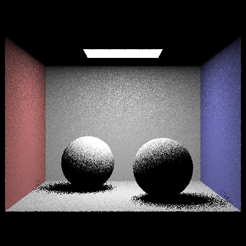
l=1
|
l=4
|
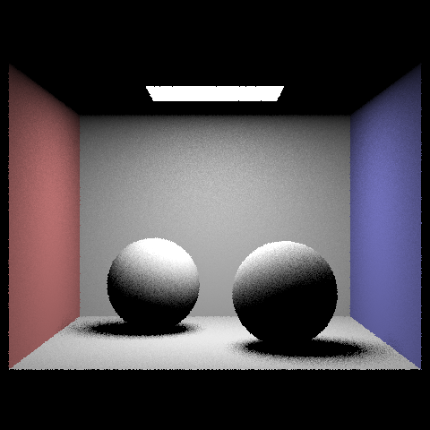
l=16
|
l=64
|
The command I used was: ./pathtracer -t 8 -s 1 -l LIGHT_SAMPLE_RATE -m 1 -f OUTPUT_FILE -r 480 480 ../dae/CBspheres_lambertian.dae. Our shadows are much more aliased/grainy on a lower number of samples per light, but we get much better clarity as we exponentially increase the number of samples. But, the highest improvments in aliasing for soft shadows appears at the initial increases in the number of samples per light, and we get somewhat of a "diminishing returns" as we increase l more and more. As we increase the number of samples per light, we also get a smoother transition from the dark parts of soft shadows to the ligher parts.
-
Firstly, uniform hemisphere sampling creates much grainier/aliased images than importance sampling. This is due to the fact that there is a lot of randomness in whether our randomly-generated ray hits a light source from the point that our camera ray intersects a primitive. A lot of this "chance" is avoided in importance sampling, as we can force every ray that we look at to be one that is already in the direction of a light, and the only "luck" is whether there is an obstruction between our point \(\vec{p}\) and the source of the light ray in the scene. Additionally, uniform hemisphere sampling generally has a darker appearance. This is due, once again, to the lower probability of picking a random ray and hitting a light with the ray (this is more pronounced in models with very few light sources). This is contrasted with how importance sampling avoids the luck of picking a ray that is directed towards a light source and not just some other surface. Finally, in the way that I implemented importance sampling, importance sampling actually runs much faster than the standard hemisphere sampling. This is because in hemisphere sampling, we have to both detect an intersection and record the primitive of the first intersection in our BVH (this is so we know what object our bouncing ray hit). This requires us to traverse a large amount of the BVH using the
intersect method, and we don't have many opportunities to short-circuit our traversal. But, in importance sampling, we only need the BVH to see if some object obstructs the path from our bouncing point to the light. So, we can just use the has_intersection method, which will just short-circuit when a collision is found (as we don't care about specifically identifying the first collision, but rather we just want to know if a collision within our ray's specified \(t\)-range exists or not).
Part 4: Global Illumination
-
To perform indirect illumination, I first set the depth limit of each generated camera ray to
max_ray_depth. Then, I did the following in the est_radiance_global_illumination function:
- If we are accumulating bounces or the max depth is \(0\), then I will set \(L_o\) equal to the zero-bounce light for the ray. If not, then I initialize \(L_o\) to be \(\vec{0}\) (because if we don't accumulate bounces, then we only care about the last bounce).
- After initializing \(L_o\), if the max depth is greater than \(0\), then we execute
at_least_once_bounce_radiance and add it to \(L_o\).
For at_least_one_bounce_radiance, we do the following:
- To get the one-bounce radiance at the current point \(\vec{p}\) on the primitive that my camera ray (\(R\)) has hit, I use
one_bounce_radiance. This ensures that we are actually finding the radiance after each ray bounce. I define this radiance as \(L\) within my function (I set \(L\) to start-off as zero if we are not accumulating light and I have not reached the final bounce yet).
- Now, we pick a random vector \(\vec{\omega_i}\) according to the BSDF of our current surface (this is done with
sample_f on our primitive's BSDF). This also provides us with \(f(\vec{\omega_i}\rightarrow\vec{\omega_o})\) (the reflectance from the random incoming ray to the reverse of the previous bounce direction) and our PDF \(p\left(\vec{\omega_i}\right)\).
- Create a "next-bounce" ray \(R_b\) centered at point \(\vec{p}\) and in the direction of \(\vec{\omega_i}\). We also set \(R_b\)'s depth to be \(1\) less than the depth of the ray \(R\). Then, we use the
intersect function on our BVH to get the next primitive that \(R_b\) will hit. This intersection point \(\vec{p_b}\) represents the origin of the next bounce's ray.
- If \(R_b\)'s depth is at \(0\), then we just return \(L\) and stop the recursion.
- To calculate the addition to \(L\) for our next iteration, we have the following cases:
- If \(R\)'s depth is at the max depth value and the max depth is at least \(2\), then we use the following as our addition to the radiance (similar to the direct lighting in part 3):\[L_{a}=\frac{f\left(\vec{\omega_i}\rightarrow\vec{\omega_o}\right)\cdot B\left(R_b\right)\cdot\cos\theta_i}{p\left(\vec{\omega_i}\right)}\] where \(B\) represents a call to the
at_least_one_bounce_radiance function (as we need to run it to see what radiance will come from the next bounce with \(R_b\)).
- We perform Russian Roulette if the conditions for the previous case are not satisfied. We have a coin with bias \(q\) (I personally chose \(q=0.4\)), and if it flips heads, we set \(L_{a}=0\) (i.e. we stop our indirect lighting recursion). If not, then we have the following choice for \(L_{a}\) (we include the \(q\)-term to account for the fact that we are adding an additional probability on top of \(p\left(\vec{\omega_i}\right)\) when generating our Monte-Carlo estimate):\[L_{a}=\frac{f\left(\vec{\omega_i}\rightarrow\vec{\omega_o}\right)\cdot B\left(R_b\right)\cdot\cos\theta_i}{(1-q)\cdot p\left(\vec{\omega_i}\right)}\]
- If we want to accumulate bounces, then we set \(L:=L+L_{a}\). If we don't, then we set \(L:=L_{a}\) (as we only care about the last bounce).
-
Here are some renderings with global illumination:
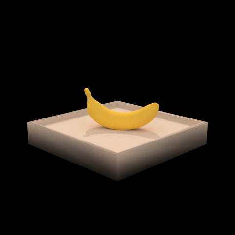
keenan/banana.dae
|
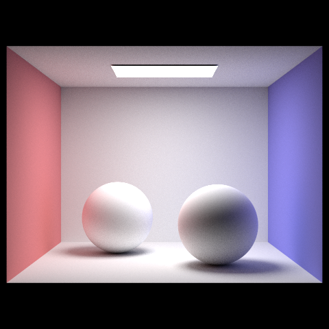
sky/CBspheres_lambertian.dae
|
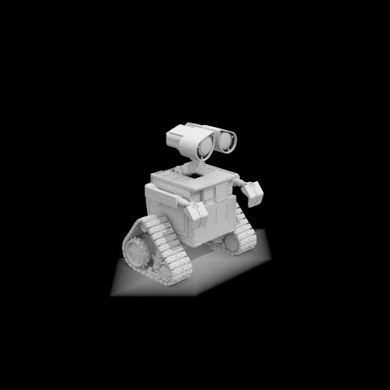
sky/wall-e.dae
|
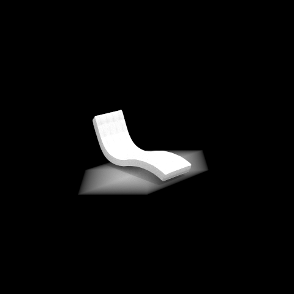
sky/bench.dae
|
The command used is: ./pathtracer -t 8 -s 1024 -l 1 -m 4 -f OUTPUT_FILE -r 480 480 ../dae/DAE_FILE
-
Here are some renderings with only direct vs. only indirect lighting:
| Direct Lighting |
Indirect Lighting |
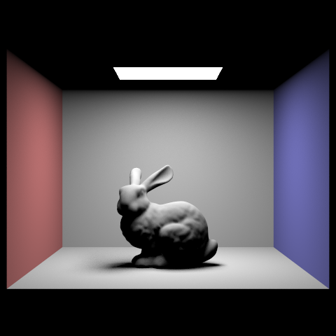
sky/CBbunny.dae
|
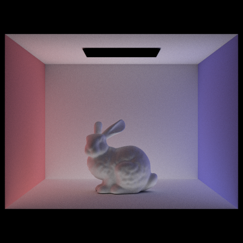
sky/CBbunny.dae
|
The command used is: ./pathtracer -t 8 -s 1024 -l 1 -m [1 if DIRECT and 4 if INDIRECT] -f OUTPUT_FILE -r 480 480 ../dae/DAE_FILE. In my code for the indirect lighting, I temporarily set it so only the second bounce and onwards is counted when accumulating light in at_least_once_bounce_radiance. As for comparing the two, we can see that the direct lighting more clearly highlights what shadows will dominate the scene if the scene were placed in a real-life physical lighting simulation. But, the strength of these shadows is too strong. This is contrasted with what happens after the first bounce (indirect lighting). In indirect lighting, we see that the light bounces-off the walls of the room to give the left-side of the wall a red tint and the right-side of the wall a blue tint (similar to how light repeatedly bounces off objects in the real-world). But, we do not have the pronounced shadows with indirect lighting, as the indirect lighting is meant to highlight more subtle details of the scene that are necessary to depict realistic lighting. Indirect lighting also depicts shadows as not being purely black and just darker tones of the underlying surface color (unlike with direct lighting, where shadows are extremely dark due to light not being able to bounce off of more than one surface). Finally, the indirect lighting shows shadows in other parts of the image, which aren't present in the direct lighting case (this is because these extra shadows require more than one bounce of light from the light source).
-
Here are renderings with accumulated vs. non-accumulated light bounces on
sky/CBbunny.dae:
| Accumulated Bounces |
\(m=0\) |
\(m=1\) |
\(m=2\) |
\(m=3\) |
\(m=4\) |
\(m=5\) |
true |
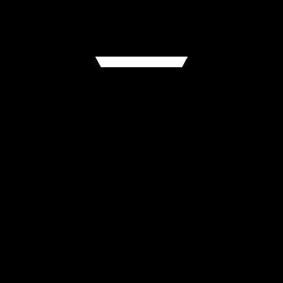
|
|
|
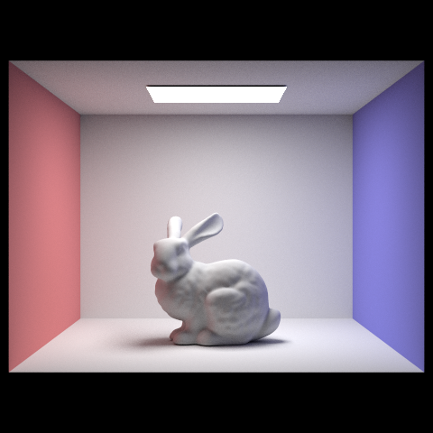
|
|
|
false |
|
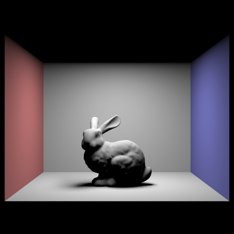
|
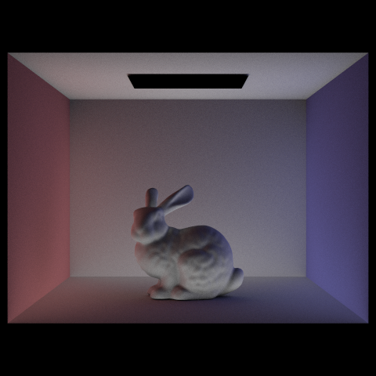
|
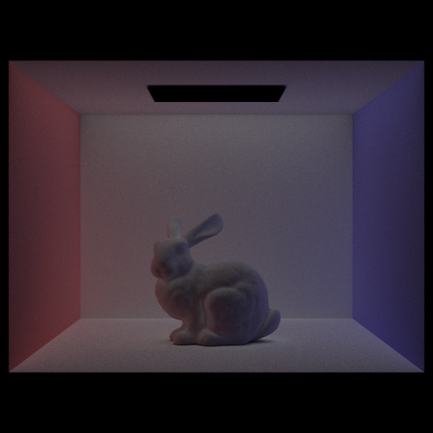
|
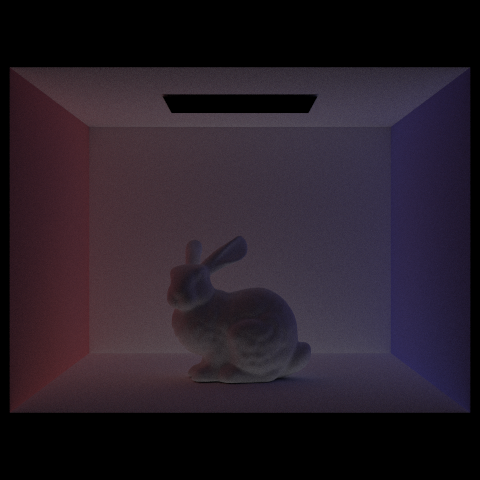
|
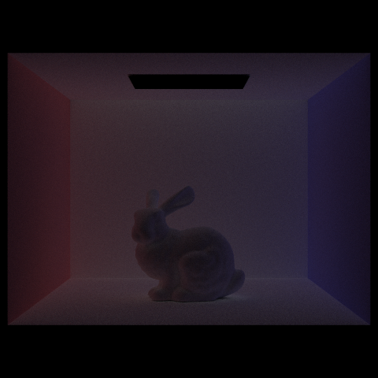
|
The command used is: ./pathtracer -t 8 -s 1024 -l 1 -m BOUNCE_LIMIT -o [1 if ACCUMULATION, 0 if NO ACCUMULATION] -f OUTPUT_FILE -r 480 480 ../dae/sky/CBbunny.dae. To test without Russian Roulette, I just set \(q:=0\) temporarily. The non-accumulated version of the renderings have a much starker difference for different values of \(m\) than with the accumulated versions. The accumulated renderings have somewhat of a "diminishing returns" after around \(m=3\) (until then, the images appear to get a little brighter and more realistically reflect red/blue light with increasing \(m\)). The reason for this is likely the fact that the non-accumulated images get darker as \(m\) grows, because we don't have as many intersections with the light source, and the radiance gets dampened as we perform the calculation for \(L_{a}\) as we go up the recursive stack. Therefore, as \(m\) increases, each additional bounce of light contributes less and less to the final colors in our rendering. But, an interesting thing to note is that \(m=2\) has our non-accumulated image with light reflected on the underside of the rabbit (because in \(m=1\), our camera ray "bounces" off the floor of the scene to hit the light, but at \(m=2\), our camera ray bounces off the underside of the rabbit and hits the floor, therefore absorbing the radiance that appeared on the floor at \(m=1\)). At \(m=3\), we observe a similar pattern, where the rabbit is once again lit on the top of its body, because the light on the ceiling now bounces back onto the rabbit's top part of the body. In real-life, light bounces off of objects to create the lighting we see in the natural world, and the fact that each different \(m\)-value adds shading to a different part of the rabbit gives us a more natural appearance to our scene when the light is accumulated over bounces. This is in contrast to simple rasterization (ex. the normal shading we performed in parts 1 and 2), where we just sample an image/scene without any regard for the physics of light and how it bounces-off and alters the color of objects based on different objects' surface BRDFs. However, simulating this lighting/bouncing is evidently computationally costly.
-
Here are renderings with Russian roulette (I rendered
sky/CBbunny.dae):
|
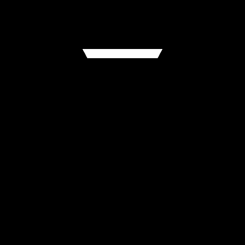
\(m=0\)
|
\(m=1\)
|
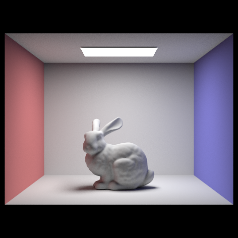
\(m=2\)
|
|
\(m=3\)
|
\(m=4\)
|
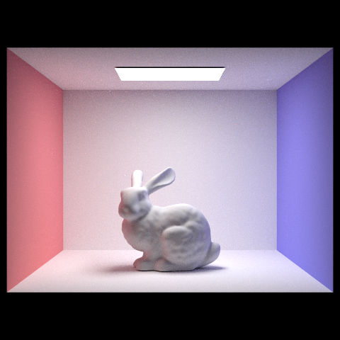
\(m=100\)
|
The command used is: ./pathtracer -t 8 -s 1024 -l 1 -m BOUNCE_LIMIT -f OUTPUT_FILE -r 480 480 ../dae/sky/CBbunny.dae.
-
Here are some renderings of
sky/dragon.dae at different pixel sampling rates and with \(4\) light rays, \(m=2\), and Russian Roulette:
|
\(s=1\)
|
\(s=2\)
|
\(s=4\)
|
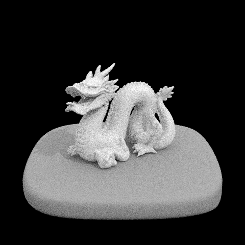
\(s=8\)
|
|
\(s=16\)
|
\(m=64\)
|
\(m=1024\)
|
The command used is: ./pathtracer -t 8 -s SAMPLING_RATE -l 4 -m 2 -f OUTPUT_FILE -r 480 480 ../dae/sky/dragon.dae. The dragon becomes less grainy as we exponentially increase the sample rate, and we get a more smooth surface on the dragon as we increase \(m\). The shadow also becomes sharper and more pronounced as we increase the sampling rate (as expected). Additionally, the texture of the dragon's skin becomes more clear/precise as we increase the sampling rate, and we can even see shadows on the underside of the dragon due to the light being allowed to bounce more than one time.
Part 5: Adaptive Sampling
-
Adaptive sampling is essentially a technique that allows us to take fewer samples of certain pixels on our screen based on the variance of the samples that we have already taken of that pixel. If we have a high-variance pixel on the screen (i.e. each random sampling of a ray through the pixel and into the scene gives a significantly different radiance), then we will have to take a lot of samples to get a good estimate of the average radiance of a ray through the pixel. But, if we end-up finding that our initial few radiance amples of a pixel are all very close to one another, we can just terminate our sampling of the pixel prematurely (and just decide the color of the pixel based on the few samples we have already taken). This is based on the statistical principle that if you have \(n\) i.i.d. random variables, and you try and estimate the mean, the probability of you being within some value \(I\) of the mean is better if you have a low variance for each trial and a larger value of \(n\). So, we exploit this principle to use fewer samples to get a radiance that is within \(\pm I\) of the true mean \(\mu\) of all rays through that pixel. As for my implementation, I split the
ns_aa samples into batches, and for each \(i\)-th batch \(B_i\), I do the following:
- Necessary info: my batch is at most size
samplesPerBatch, but it is clamped by the remaining number of samples I can at most take according to ns_aa minus \(n\) (the number of samples evaluated so far). I also maintain a running sum of the luminances (\(s_1\)) and the squared luminances (\(s_2\)) among all \(n\) samples.
- I first take \(|B_i|\) samples of random rays through our pixel just like in part 1 of this homework. I will take the luminances of each sample (using
illum) and add the value to \(s_1\) and the squared value to \(s_2\).
- I increment the number of evaluated samples (\(n\)) by \(|B_i|\).
- I calculate the standard deviation and average of the samples so far as follows:\[\mu=\frac{s_1}{n}\]\[\sigma=\sqrt{\frac{1}{n-1}\left(s_2-\frac{s_1^2}{n}\right)}\]
- I define \(I=1.96\cdot\frac{\sigma}{\sqrt{n}}\) (which roughly describes how likely "close" my current average is to the true mean radiance of the pixel).
- If \(I\leq T\mu\), then I know that I have reached the desired confidence-level of how close my mean is likely to be to the true mean (the desired confidence-level \(T\) is specified by the tolerance passed-in through the CLI command). If this happens, then I stop sampling for this pixel and just return the average radiance of my samples so far.
- If we have not reached our desired confidence yet, then we just move-on to the next batch (or take the average if we have already reached our maximum number of samples).
-
Here are renderings of
sky/CBspheres_lambertian.dae and keenan/banana.dae with the required number of samples, light rays, and bounce limit (I have disabled Russian Roulette):
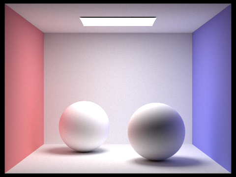
sky/CBspheres_lambertian.dae (Rendering)
|
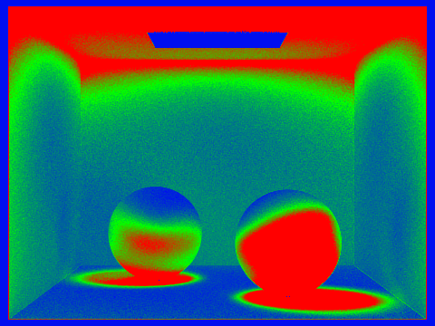
sky/CBspheres_lambertian.dae (Rate)
|
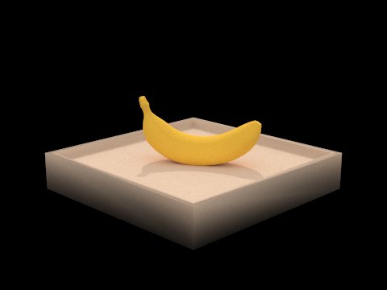
keenan/banana.dae (Rendering)
|
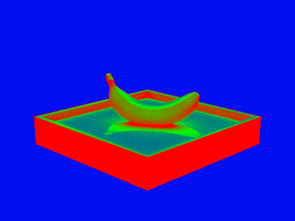
keenan/banana.dae (Rate)
|
The command I used is: ./pathtracer -t 8 -s 2048 -a 64 0.05 -l 1 -m 5 -r 480 360 -f OUTPUT_FILE ../dae/sky/dragon.dae